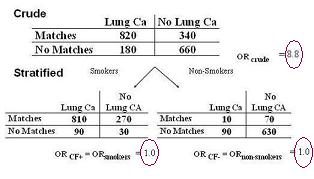
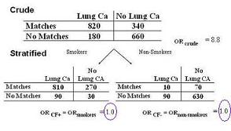

Example: Stratification - Matches, Smoking, and Lung Cancer
Lead Author(s): Jeff Martin, MD
Reason for Stratification
In the example below we are concerned about the confounding effect of smoking on the relationship between matches and lung cancer, we stratify on the two values of smoking:
- smoking present
- smoking absent
New Strat: Smoking and Non-smoking
Each of these strata is now unconfounded with respect to smoking status.
After we create these strata, we observe that each of the smoking specific-stratum odds ratios have become one.
- The difference between the crude and adjusted measure of association represents bias due to confounding.

Crude OR = 2x2 table - no adjustment for confounder
Stratified OR =A 2x2 table for each of the stratified variables - adjusted for confounder
Summary = Single Overall Unconfounded Adjusted Estimate
In the smoking, matches, lung cancer example (below), the measures of association from the different strata were identical; they are both equal to 1.
- Herethe summary is 1 for a single overall unconfounded adjusted estimate.
Summary Adjusted Estimate = Summary of all measurements from the stratified variables

But, in real life it is seldom the case that the estimates from the various strata are identical.